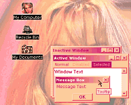
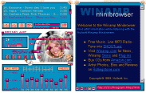

INSTRUCTIONS: INSTRUCTIONS:
1) Click the link below
and download the britney_saver.exe file.
2) After the you have downloaded the file, go to the locaion
where you have save it.
3) Double click it and choose "Unzip".
4) Now, go to "C:\vicky", double click Britney
Spears.exe file and you'll prompted to install the saver. Click "Ok" if you
still want to install it. After the installation is finished, go to your PC's Display
Properies (Start > Settings > Control Panel > Display > Screen Saver) and
check out the screen saver! Enjoy!
DOWNLOAD:
2,46MB
Exe File |
INSTRUCTIONS:
1) Download the
Winzip file.
2) Unzip the contents into your .../plus!/themes/ directory.
3) On the Start Menu, go to Settings -> Control Panel ->
Desktop Themes, and select "Britney Spears Theme".
DOWNLOAD:
1290K
Win Zip File |
INSTRUCTIONS:
1) Click the link
below to download the Winzip file.
2) Save it in your ...\Winamp\Skins\ directory.
3) If you need help how to install the skin, unzip somewhere BritneyAMP.zip and read README.txt.
DOWNLOAD:
145K
Win Zip File
MORE:
The skin is with
designed Playlist, Equalizer and Minibrowser! Version 1.0. |
 INSTRUCTIONS: INSTRUCTIONS:
1) Click the link
below and download the wallpaper.exe file.
2) After the you have downloaded the file, go to the locaion
where you have save it.
3) Double click it and choose "Unzip". Now, go to
your PC's Display Properies (Start > Settings > Control Panel > Display); click
"Browse" and go to "C:\Britney\wallpaper\. Select the wallpaper.bmp
file and click "Open". Finally, click "Ok"! Now, you have Britney on
your desktop! Enjoy!
DOWNLOAD:
236K Exe File |
|
|
All HTML and layout
features are © Vicky's Britney Spears Site
All Rights Reserved. |